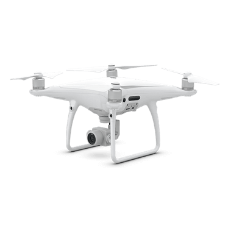
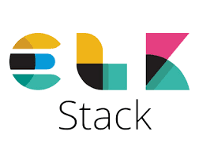
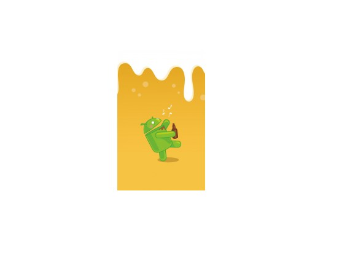

Mobile app & dummy monitoring for emergency-care training
Double Bachelor's thesis bringing together the two fundamental pillars of computer science: software and hardware.
JavaAndroidGPSFirebaseSigfoxBluetooth
Portfolio
Theses, research and tools I've built across cybersecurity, IoT and systems.
Double Bachelor's thesis bringing together the two fundamental pillars of computer science: software and hardware.
Master's thesis designing a proprietary methodology to test IP-camera security, applied to two of the best-selling cameras on the market.

Analysis of the use and importance of drones and UAVs in industry, the vulnerabilities and threats they face, and the impact their security can have on industrial environments.
Tool to gather information about and exploit IP cameras using the Shodan search engine.
Operation and core concepts of memory forensics focused on Windows, with a comprehensive study of the Volatility tool.

Collection and visualization of network-flow data (Netflow, sFlow, IPFIX) with the Elastic Stack. In collaboration with Mauro de los Santos.
Deploying a cluster with virtual and real components for high-performance computing using the open-source Qlustar framework, including install guide, testing and monitoring.
Creation of a basic API with mocks to verify its correct operation, automating test execution with Dredd.
Execution and analysis of several attacks on PDF files, plus identification and discovery of malware embedded in PDFs.

Android application developed in collaboration with Mauro de los Santos for the Computer Engineering degree.